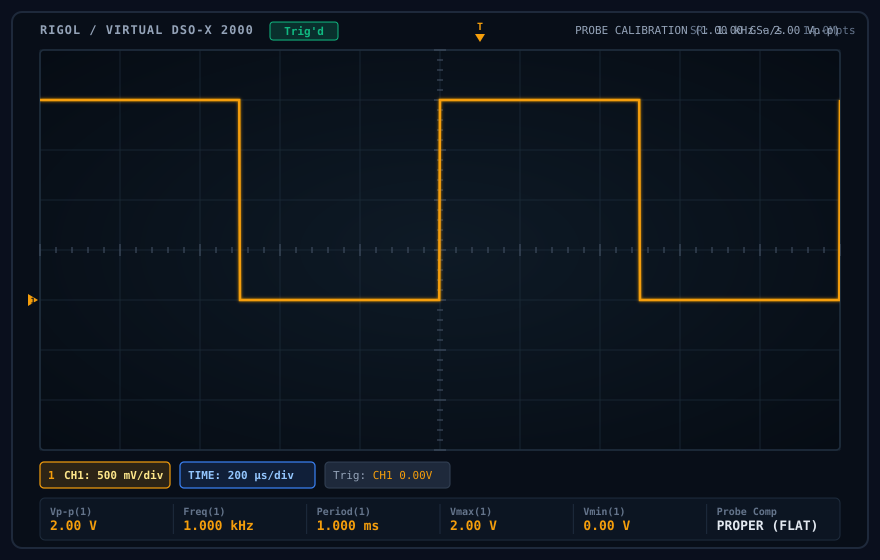
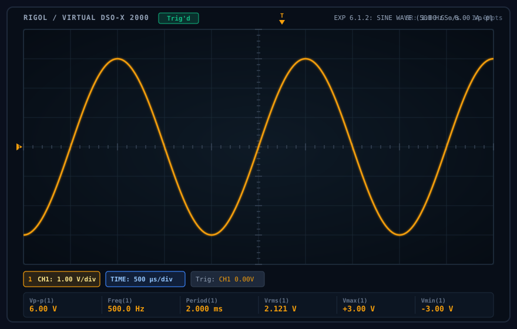
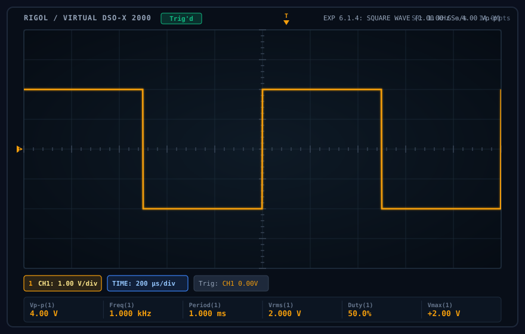
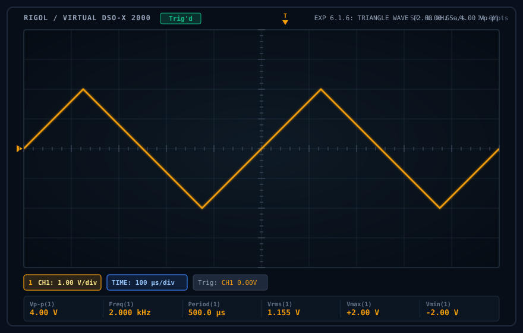
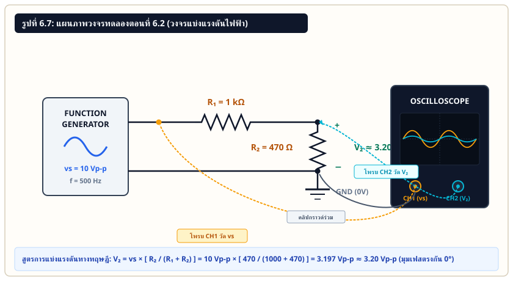
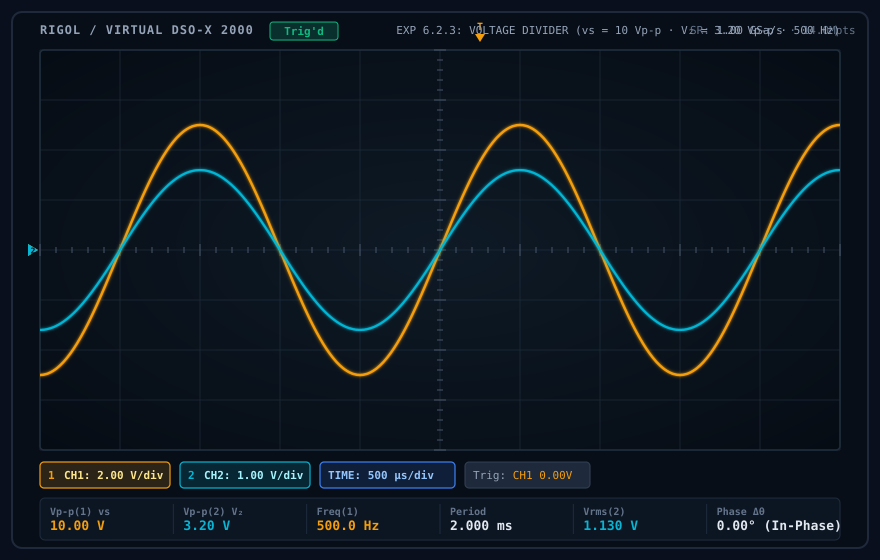

การศึกษาหลักการทำงานของออสซิลโลสโคป การปรับสเกลแกนเวลาและแกนแรงดัน การสอบเทียบโพรบ และการวัดสัญญาณรูปคลื่นไซน์ คลื่นสี่เหลี่ยม คลื่นสามเหลี่ยม และวงจรแบ่งแรงดันไฟฟ้า
สาระสำคัญของบทปฏิบัติการ: ออสซิลโลสโคป (Oscilloscope) เป็นเครื่องมือวัดทางไฟฟ้าที่แปลงสัญญาณแรงดันไฟฟ้าที่แปรเปลี่ยนตามเวลาให้ออกมาเป็นกราฟรูปคลื่น 2 มิติ โดยแกนตั้ง (Vertical Axis) แสดงขนาดแรงดันไฟฟ้า และแกนนอน (Horizontal Axis) แสดงเวลา หน้าจอแบ่งเป็นตารางกริดมาตรฐาน 10 ช่องแนวนอน และ 8 ช่องแนวตั้ง ในบทปฏิบัติการนี้นิสิตจะได้ฝึกฝนการปรับตั้งค่า V/DIV, TIME/DIV, Trigger, การสอบเทียบโพรบ (Probe Compensation), การกำเนิดรูปคลื่นไซน์ คลื่นสี่เหลี่ยม คลื่นสามเหลี่ยม และการวัดแรงดันตกคร่อมในวงจรแบ่งแรงดันไฟฟ้า (Voltage Divider) เพื่อเปรียบเทียบกับค่าคำนวณทางทฤษฎี
รายการอุปกรณ์ตามคู่มือการทดลอง หน้า 49 ประกอบด้วยเครื่องมือวัดหลักและชิ้นส่วนอิเล็กทรอนิกส์ ดังต่อไปนี้:
| ลำดับ | ชื่ออุปกรณ์ / เครื่องมือวัด | จำนวน | คุณลักษณะเฉพาะและบทบาทในการทดลอง |
|---|---|---|---|
| 1 | ออสซิลโลสโคป (Digital Storage Oscilloscope: DSO) | 1 เครื่อง | รองรับ 2 ช่องสัญญาณ (CH1, CH2), หน้าจอขนาด 10×8 ช่อง (Divisions), อิมพีแดนซ์ขาเข้า 1 MΩ // 15-20 pF |
| 2 | เครื่องกำเนิดสัญญาณ (Function Generator) | 1 เครื่อง | สามารถสร้างสัญญาณคลื่นรูปไซน์ คลื่นสี่เหลี่ยม และคลื่นสามเหลี่ยม ปรับแอมพลิจูด (Vp-p) และความถี่ได้ |
| 3 | สายวัดสัญญาณโพรบ (Passive Probe 10X/1X) | 2 เส้น | สายโพรบหัวคีบพร้อมคลิปกราวด์สำหรับต่อเข้าขั้วต่อ BNC ของออสซิลโลสโคป มีตัวปรับ Trimmer สำหรับชดเชยค่าความจุ |
| 4 | สายต่อสัญญาณ BNC to Alligator Clips | 1 เส้น | สำหรับจ่ายสัญญาณจากช่อง Main Output ของ Function Generator เข้าสู่วงจรทดลอง |
| 5 | ตัวต้านทาน R₁ ขนาด 1 kΩ (0.5 W, 5%) | 1 ตัว | ตัวต้านทานต่ออนุกรมในวงจรแบ่งแรงดันตอนที่ 6.2 (รหัสสี: น้ำตาล-ดำ-แดง-ทอง) |
| 6 | ตัวต้านทาน R₂ ขนาด 470 Ω (0.5 W, 5%) | 1 ตัว | ตัวต้านทานรับแรงดันตกคร่อม V₂ ที่ทำการวัด (รหัสสี: เหลือง-ม่วง-น้ำตาล-ทอง) |
| 7 | แผงต่อวงจรทดลอง (Breadboard) | 1 แผง | แผงวงจรสำหรับเสียบขาตัวต้านทานและคีบสายวัดสัญญาณอย่างมั่นคง |
คลิปกราวด์สีดำ (Ground Clip) ของสายโพรบทุกช่องบนออสซิลโลสโคปจะต่อเชื่อมถึงกันภายในผ่านโครงเครื่องและต่อลงกราวด์ดินของระบบไฟฟ้า (Earth Ground) เสมอ ห้ามนำคลิปกราวด์ของโพรบไปคีบที่จุดที่มีศักย์ไฟฟ้าต่างกันในวงจรโดยเด็ดขาด เพราะจะทำให้เกิดการลัดวงจร (Short Circuit) ผ่านตัวเครื่องออสซิลโลสโคป ซึ่งอาจก่อให้เกิดความเสียหายต่ออุปกรณ์และอันตรายต่อผู้ปฏิบัติงาน ในการทดลองให้คีบคลิปกราวด์ไว้ที่จุดอ้างอิงกราวด์ (0V) ร่วมกันเพียงจุดเดียวเท่านั้น
หน้าจอแสดงผลของออสซิลโลสโคปมีโครงสร้างเป็นตารางกริดสี่เหลี่ยม (Graticule) ขนาดมาตรฐาน 10 ช่องตามแนวนอน (Horizontal Divisions) และ 8 ช่องตามแนวตั้ง (Vertical Divisions) โดยแต่ละช่องใหญ่จะถูกแบ่งย่อยออกเป็น 5 ขีดย่อยตามแนวแกนกลาง ซึ่งเท่ากับ 0.2 ช่องต่อ 1 ขีดย่อย (0.2 DIV/Sub-division):
คาบเวลา (T) คือระยะเวลาที่รูปคลื่นเคลื่อนที่ครบ 1 รอบสมบูรณ์ สามารถอ่านได้จากจำนวนช่องในแนวนอนคูณกับค่า TIME/DIV ที่ตั้งไว้บนหน้าจอ:
และความถี่ (f) คือจำนวนรอบการแกว่งกวัดในหนึ่งวินาที มีหน่วยเป็นเฮิร์ตซ์ (Hz) ซึ่งมีความสัมพันธ์เป็นส่วนกลับของคาบเวลา:
แรงดันยอดถึงยอด (Vp-p) คือผลต่างระหว่างจุดสูงสุดบวกและจุดต่ำสุดลบของรูปคลื่น หาได้จากจำนวนช่องในแนวตั้งคูณกับค่า VOLTS/DIV:
สำหรับสัญญาณสมมาตรที่ไม่มีแรงดันไบแอสกระแสตรง (Zero DC Offset) แรงดันค่ายอด (Vp หรือแอมพลิจูด) จะมีค่าเท่ากับครึ่งหนึ่งของแรงดันยอดถึงยอด:
ค่าประสิทธิผลหรือค่าเฉลี่ยกำลังสอง (Root Mean Square: RMS) คือค่าแรงดันที่สร้างกำลังงานความร้อนเทียบเท่ากับแรงดันไฟตรง โดยมีสมการคำนวณตามรูปทรงทางเรขาคณิตของคลื่น ดังนี้:
| ชนิดรูปคลื่น (Waveform Type) | สูตรคำนวณจากค่ายอด V_p | อัตราส่วนตัวคูณ (Multiplier) | Crest Factor (V_p / V_rms) |
|---|---|---|---|
| คลื่นรูปไซน์ (Sine Wave) | Vrms = Vp √2 | Vrms ≈ 0.7071 × Vp | √2 ≈ 1.414 |
| คลื่นรูปสี่เหลี่ยมสมมาตร (Square Wave 50% Duty) | Vrms = Vp | Vrms = 1.0000 × Vp | 1.000 |
| คลื่นรูปสามเหลี่ยม (Triangle Wave) | Vrms = Vp √3 | Vrms ≈ 0.5774 × Vp | √3 ≈ 1.732 |
เมื่อต่อตัวต้านทานสองตัว R₁ และ R₂ อนุกรมกันเข้ากับแหล่งจ่ายแรงดันสลับ vs(t) กระแสไฟฟ้าในวงจรจะไหลผ่านตัวต้านทานทั้งสองเท่ากัน แรงดันตกคร่อมตัวต้านทาน R₂ คำนวณได้จากกฎการแบ่งแรงดัน:
แทนค่าตัวแปรตามเงื่อนไขการทดลองตอนที่ 6.2 (vs = 10.0 Vp-p, R₁ = 1000 Ω, R₂ = 470 Ω):
ก่อนเริ่มต้นการทดลองวัดสัญญาณทุกครั้ง วิศวกรไฟฟ้าจำเป็นต้องทำการตรวจสอบและปรับชดเชยความจุแฝงของสายโพรบ (Probe Compensation) ที่ตำแหน่งหัวโพรบสเกล 10X โดยนำปลายโพรบไปสัมผัสกับขั้วต่อ PROBE COMP / CAL บนตัวเครื่องออสซิลโลสโคป ซึ่งจะจ่ายสัญญาณคลื่นสี่เหลี่ยมมาตรฐานความถี่ 1 kHz ขนาด 2.00 Vp-p ออกมาอย่างต่อเนื่อง:

| ลำดับ | พารามิเตอร์ที่วัดบนหน้าจอ | ค่าที่อ่านได้ | ความหมายและเกณฑ์ทางวิศวกรรม |
|---|---|---|---|
| 1 | รูปแบบสัญญาณ | Square Wave | คลื่นสี่เหลี่ยมสมมาตรจากจุดทดสอบ Cal บนตัวเครื่อง |
| 2 | แรงดันยอดถึงยอด (V_p-p) | 2.00 V | ครอบคลุม 4 ช่องแนวตั้ง (ที่สเกล 0.5 V/DIV) |
| 3 | ความถี่ (Frequency, f) | 1.000 kHz | ค่ามาตรฐานของสัญญาณสอบเทียบเครื่อง |
| 4 | คาบเวลา (Period, T) | 1.000 ms | กว้าง 5 ช่องแนวนอน (ที่สเกล 200 μs/DIV) |
| 5 | การชดเชยโพรบ (Comp) | Proper (Flat) | ขอบบนและขอบล่างของคลื่นเรียบตรง ไม่มียอดโค้งแหลมหรือลาดมน |
ขั้นตอนนี้เป็นการฝึกทักษะการเชื่อมต่อสายสัญญาณ การปรับตั้งปุ่มแอมพลิจูดและความถี่บน Function Generator และการปรับสเกล V/DIV, TIME/DIV บนออสซิลโลสโคป เพื่อให้ได้รูปคลื่นที่นิ่งและอ่านค่าได้แม่นยำประมาณ 2 รูปคลื่นบนหน้าจอ ตามขั้นตอนในคู่มือหน้า 50:

| ลำดับ | พารามิเตอร์ที่บันทึกลงสมุดแล็บ | ค่าที่บันทึกได้ | วิธีการอ่านจากตารางกริดบนหน้าจอ |
|---|---|---|---|
| 1 | แกนตั้ง V/DIV | 1.00 V | ตั้งสเกล 1 โวลต์ต่อหนึ่งช่องใหญ่ |
| 2 | ขนาดแรงดัน (V_p-p) | 6.00 Vp-p | ยอดถึงยอดสูง 6 ช่องพอดี (6 div × 1 V/div = 6 V) |
| 3 | แกนนอน TIME/DIV | 500 × 10-6 s | 500 μs/div (หรือ 0.5 ms ต่อช่อง) |
| 4 | คาบเวลา (Period, T) | 2 × 10-3 s | 1 คลื่นใช้ 4 ช่องแนวนอน (4 div × 0.5 ms = 2 ms) |
| 5 | ความถี่ (Frequency, f) | 500 Hz | f = 1 / T = 1 / (2 × 10-3 s) = 500 Hz ตรงตามแหล่งจ่าย |
| 6 | แรงดันประสิทธิผล (V_rms) | 2.121 V | Vrms = Vp / √2 = 3.00 V / 1.4142 ≈ 2.121 V |

| ลำดับ | พารามิเตอร์ที่บันทึกลงสมุดแล็บ | ค่าที่บันทึกได้ | วิธีการอ่านจากตารางกริดบนหน้าจอ |
|---|---|---|---|
| 1 | แกนตั้ง V/DIV | 1.00 V | ตั้งสเกล 1 โวลต์ต่อหนึ่งช่องใหญ่ |
| 2 | ขนาดแรงดัน (V_p-p) | 4.00 Vp-p | ยอดถึงยอดสูง 4 ช่องแนวตั้ง (4 div × 1 V/div = 4 V) |
| 3 | แกนนอน TIME/DIV | 200 × 10-6 s | 200 μs/div (หรือ 0.2 ms ต่อช่อง) |
| 4 | คาบเวลา (Period, T) | 1 × 10-3 s | 1 คลื่นใช้ 5 ช่องแนวนอน (5 div × 0.2 ms = 1.0 ms) |
| 5 | ความถี่ (Frequency, f) | 1000 Hz | f = 1 / T = 1 / (1 × 10-3 s) = 1000 Hz = 1 kHz |
| 6 | แรงดันประสิทธิผล (V_rms) | 2.000 V | สำหรับคลื่นสี่เหลี่ยมสมมาตร Vrms = Vp = 4 / 2 = 2.00 V |

| ลำดับ | พารามิเตอร์ที่บันทึกลงสมุดแล็บ | ค่าที่บันทึกได้ | วิธีการอ่านจากตารางกริดบนหน้าจอ |
|---|---|---|---|
| 1 | แกนตั้ง V/DIV | 1.00 V | ตั้งสเกล 1 โวลต์ต่อหนึ่งช่องใหญ่ |
| 2 | ขนาดแรงดัน (V_p-p) | 4.00 Vp-p | ยอดถึงยอดสูง 4 ช่องแนวตั้ง (4 div × 1 V/div = 4 V) |
| 3 | แกนนอน TIME/DIV | 100 × 10-6 s | 100 μs/div (หรือ 0.1 ms ต่อช่อง) |
| 4 | คาบเวลา (Period, T) | 500 × 10-6 s | 1 คลื่นใช้ 5 ช่องแนวนอน (5 div × 100 μs = 500 μs = 0.5 ms) |
| 5 | ความถี่ (Frequency, f) | 2000 Hz | f = 1 / T = 1 / (500 × 10-6 s) = 2000 Hz = 2 kHz |
| 6 | แรงดันประสิทธิผล (V_rms) | 1.155 V | สำหรับคลื่นสามเหลี่ยม Vrms = Vp / √3 = 2.00 V / 1.732 ≈ 1.155 V |
| รูปที่ในคู่มือ | ชนิดรูปคลื่น | V_p-p (V) | V_p (V) | V_rms (V) | TIME/DIV | คาบ T (s) | ความถี่ f (Hz) | จำนวนลูกคลื่นบนจอ |
|---|---|---|---|---|---|---|---|---|
| รูปที่ 6.4 | คลื่นไซน์ (Sine) | 6.00 | 3.00 | 2.121 | 500 μs | 2.0 × 10-3 | 500 | 2.5 รอบ |
| รูปที่ 6.5 | คลื่นสี่เหลี่ยม (Square) | 4.00 | 2.00 | 2.000 | 200 μs | 1.0 × 10-3 | 1,000 | 2.0 รอบ |
| รูปที่ 6.6 | คลื่นสามเหลี่ยม (Triangle) | 4.00 | 2.00 | 1.155 | 100 μs | 0.5 × 10-3 | 2,000 | 2.0 รอบ |
การทดลองนี้เป็นการนำออสซิลโลสโคปมาใช้วัดสัญญาณในวงจรไฟฟ้าจริง โดยต่อวงจรแบ่งแรงดัน (Voltage Divider) เพื่อศึกษาการลดทอนของแรงดัน และเปรียบเทียบเฟสระหว่างแรงดันตกคร่อมตัวต้านทานกับแรงดันแหล่งจ่าย ตามขั้นตอนในคู่มือหน้า 52 และ 53:


| ลำดับ | พารามิเตอร์ที่บันทึกลงสมุดแล็บ | ค่าที่อ่านได้ | การวิเคราะห์ทางทฤษฎีและตำแหน่งบนจอ |
|---|---|---|---|
| 1 | แกนตั้ง V/DIV (CH2) | 1.00 V | สเกล 1 โวลต์ต่อช่องสำหรับวัดแรงดันย่อย V₂ |
| 2 | ขนาดแรงดัน (V_p-p) | 3.20 Vp-p | อ่านได้ 3.2 ช่องพอดี (ทฤษฎีคำนวณได้ 3.197 Vp-p) |
| 3 | แกนนอน TIME/DIV | 500 × 10-6 s | 500 μs/div (0.5 ms ต่อช่อง) |
| 4 | คาบเวลา (Period, T) | 2 × 10-3 s | กว้าง 4 ช่องแนวนอน (4 div × 0.5 ms = 2.0 ms) |
| 5 | ความถี่ (Frequency, f) | 500 Hz | f = 1 / 2 ms = 500 Hz (ความถี่ไม่เปลี่ยนแปลง) |
| 6 | มุมต่างเฟส (Δθ) | 0.0° (In-Phase) | จุดตัดศูนย์และยอดคลื่นตรงกันสมบูรณ์ เนื่องจากเป็นโหลดความต้านทานบริสุทธิ์ |
การวิเคราะห์ผลตามหัวข้อในคู่มือหน้า 54 ครอบคลุม 3 ประเด็นหลักทางวิศวกรรมไฟฟ้า ดังนี้:
ในวงจรแบ่งแรงดันตอนที่ 6.2 แรงดันรวมจากแหล่งจ่าย vs = 10.0 Vp-p ถูกแบ่งตามอัตราส่วนความต้านทาน R₁ = 1 kΩ และ R₂ = 470 Ω:
ค่าวัดจริงที่อ่านได้จากออสซิลโลสโคปคือ 3.20 Vp-p มีความคลาดเคลื่อนเพียง 0.09% ปัจจัยที่ทำให้เกิดความคลาดเคลื่อนเล็กน้อยในทางปฏิบัติ ได้แก่:
สัญญาณแรงดัน V₂ ที่ตกคร่อมตัวต้านทาน R₂ ยังคงมีความถี่เท่ากับ 500 Hz และมีคาบเวลา T = 2.0 ms เท่ากับสัญญาณของแหล่งจ่าย vs ทุกประการ เนื่องจากวงจรนี้เป็นวงจรความต้านทานเชิงเส้น (Linear Resistive Circuit) ซึ่งไม่มีผลทำให้ความถี่หรืออัตราเร็วเชิงมุม (ω) เปลี่ยนแปลง
จากการสังเกตรูปคลื่นเปรียบเทียบบนหน้าจอออสซิลโลสโคปในรูปที่ 6.8 พบว่า สัญญาณแรงดันแหล่งจ่าย vs (CH1) และสัญญาณแรงดันตกคร่อม V₂ (CH2) มีจุดตัดผ่านแกนศูนย์ (Zero-Crossing) และจุดยอดสูงสุดในเวลาเดียวกันพอดี ซึ่งแสดงว่าสัญญาณทั้งสองมีมุมเฟสตรงกัน (In-Phase, Δθ = 0.0°) เนื่องจากตัวต้านทานบริสุทธิ์มีอิมพีแดนซ์เป็นจำนวนจริง (ZR = R ∠ 0°) ไม่ก่อให้เกิดการหน่วงหรือนำหน้าของเฟส เหมือนกับตัวเก็บประจุหรือตัวเหนี่ยวนำ
เพื่อความสะดวกของนิสิตในการบันทึกผลลงเล่มคู่มือหน้า 55 ส่วนนี้ได้เรียบเรียงบทอภิปรายและข้อเขียนสรุปผลตามมาตรฐานวิชาการ สามารถนำไปคัดลอกลงเล่มรายงานได้ทันที:
จากการทดลองปฏิบัติการที่ 6 เรื่องการใช้งานออสซิลโลสโคปและเครื่องกำเนิดสัญญาณ ได้ข้อสรุปผลการทดลอง 2 ส่วนหลักดังนี้ ในตอนที่ 6.1 การวัดสัญญาณรูปคลื่นไซน์ (500 Hz, 6 Vp-p), สี่เหลี่ยม (1 kHz, 4 Vp-p) และสามเหลี่ยม (2 kHz, 4 Vp-p) สามารถปรับตั้งค่า V/DIV และ TIME/DIV เพื่อสังเกตรูปคลื่นที่นิ่งและชัดเจนประมาณ 2 รูปคลื่นบนหน้าจอได้อย่างถูกต้อง โดยคาบเวลาและความถี่ที่คำนวณได้จากจำนวนช่องแนวนอนคูณด้วยสเกล TIME/DIV สอดคล้องกับค่าที่ตั้งไว้บนเครื่องกำเนิดสัญญาณอย่างแม่นยำ และค่าแรงดันประสิทธิผล (V_rms) ของแต่ละรูปคลื่นมีค่าสัมพันธ์กับค่ายอดตามสูตรทางคณิตศาสตร์อย่างถูกต้อง โดยคลื่นสี่เหลี่ยมมีค่า V_rms สูงสุดเท่ากับ V_p รองลงมาคือคลื่นไซน์ (V_p / √2) และคลื่นสามเหลี่ยมมีค่าต่ำสุด (V_p / √3) สำหรับการทดลองตอนที่ 6.2 ในวงจรแบ่งแรงดันที่ประกอบด้วย R₁ = 1 kΩ และ R₂ = 470 Ω จ่ายด้วยสัญญาณไซน์ 10 Vp-p ที่ 500 Hz พบว่าแรงดันตกคร่อม R₂ ที่วัดได้จริงมีค่าเท่ากับ 3.20 Vp-p ซึ่งสอดคล้องกับค่าคำนวณตามกฎการแบ่งแรงดันทางทฤษฎีที่ได้ 3.197 Vp-p โดยมีเปอร์เซ็นต์ความคลาดเคลื่อนเพียง +0.09% และสัญญาณ V₂ มีความถี่ 500 Hz เท่ากับแหล่งจ่าย พร้อมทั้งมีมุมเฟสตรงกัน (0 องศา) เนื่องจากเป็นวงจรความต้านทานบริสุทธิ์
ความคลาดเคลื่อนเล็กน้อยที่เกิดขึ้นระหว่างค่าวัดและค่าคำนวณ เกิดจาก 3 ปัจจัยหลักคือ 1) ความคลาดเคลื่อนของค่าความต้านทานจริงที่มีค่าพิกัด ±5% จากค่าระบุบนแถบสี 2) ความละเอียดในการอ่านเส้นสัญญาณบนตารางกริดออสซิลโลสโคปด้วยสายตาของผู้ทดลอง (Visual Interpolation Error) ซึ่งสามารถลดความคลาดเคลื่อนนี้ได้โดยการปรับสเกล V/DIV ให้สัญญาณแผ่ขยายเต็มหน้าจอมากที่สุด และ 3) อิมพีแดนซ์ขาเข้าของโพรบและออสซิลโลสโคปที่ขนานอยู่กับวงจรทดสอบ ซึ่งมีแนวทางแก้ไขโดยการเลือกใช้โพรบแบบลดทอน 10X และต้องทำการสอบเทียบหัวโพรบ (Probe Compensation) ด้วยสัญญาณ Calibrate 1 kHz ให้ได้รูปคลื่นสี่เหลี่ยมขอบฉากเรียบสนิทก่อนเริ่มการวัดทุกครั้ง เพื่อป้องกันการบิดเบือนของรูปคลื่นที่ความถี่สูง
คำตอบ: โพรบ 1X จะส่งผ่านสัญญาณตรงเข้าสู่ออสซิลโลสโคปโดยไม่มีการลดทอน มีอินพุตอิมพีแดนซ์ 1 MΩ ขนานกับความจุแฝงสูง (ประมาณ 80-100 pF) เหมาะสำหรับวัดสัญญาณแรงดันต่ำที่ความถี่ต่ำมาก ส่วนโพรบ 10X จะมีตัวต้านทาน 9 MΩ ต่ออนุกรมภายในหัวโพรบเพื่อแบ่งแรงดันลง 10 เท่า ทำให้มีอินพุตอิมพีแดนซ์สูงขึ้นถึง 10 MΩ และลดค่าความจุแฝงลงเหลือเพียง 10-15 pF ซึ่งช่วยลดผลกระทบของการโหลดวงจร (Circuit Loading Effect) และขยายแบนด์วิดท์ในการวัดความถี่สูง จึงเป็นโพรบมาตรฐานที่แนะนำให้ใช้งานในทางวิศวกรรม
คำตอบ:
1. DC Coupling: ส่งผ่านสัญญาณทั้งหมดทั้งแรงดันกระแสตรง (DC Offset) และแรงดันกระแสสลับ (AC) เข้าสู่หน้าจอ เหมาะสำหรับการวัดสัญญาณทั่วไป
2. AC Coupling: ต่อตัวเก็บประจุอนุกรมภายในเพื่อบล็อกแรงดันไฟตรง (DC) ออกไป เหลือเฉพาะสัญญาณไฟสลับ (AC) เหมาะสำหรับใช้วัดสัญญาณริปเปิล (Ripple Voltage) หรือสัญญาณรบกวนขนาดเล็กที่ขี่อยู่บนแรงดันไฟตรงสูง
3. GND: ตัดการเชื่อมต่อสัญญาณภายนอกและต่ออินพุตของแอมพลิฟายเออร์ลงกราวด์ เพื่อใช้กำหนดระนาบอ้างอิงแรงดัน 0 โวลต์บนหน้าจอ
คำตอบ: วงจร Trigger มีหน้าที่กำหนดจุดเริ่มต้นของการสแกนกวาดลำอิเล็กตรอนหรือการบันทึกข้อมูลในแนวนอน เพื่อให้การวาดรูปคลื่นในแต่ละรอบเริ่มต้นที่ระดับแรงดัน (Trigger Level) และความชัน (Trigger Slope: ขอบขาขึ้นหรือขาลง) เดียวกันเสมอ ทำให้รูปคลื่นที่แสดงบนหน้าจอดูหยุดนิ่ง หากตั้ง Trigger ไม่เหมาะสมหรือไม่จับสัญญาณ รูปคลื่นบนหน้าจอจะวิ่งเลื่อนไปมาอย่างต่อเนื่องหรือไม่สามารถแสดงผลได้อย่างมีเสถียรภาพ